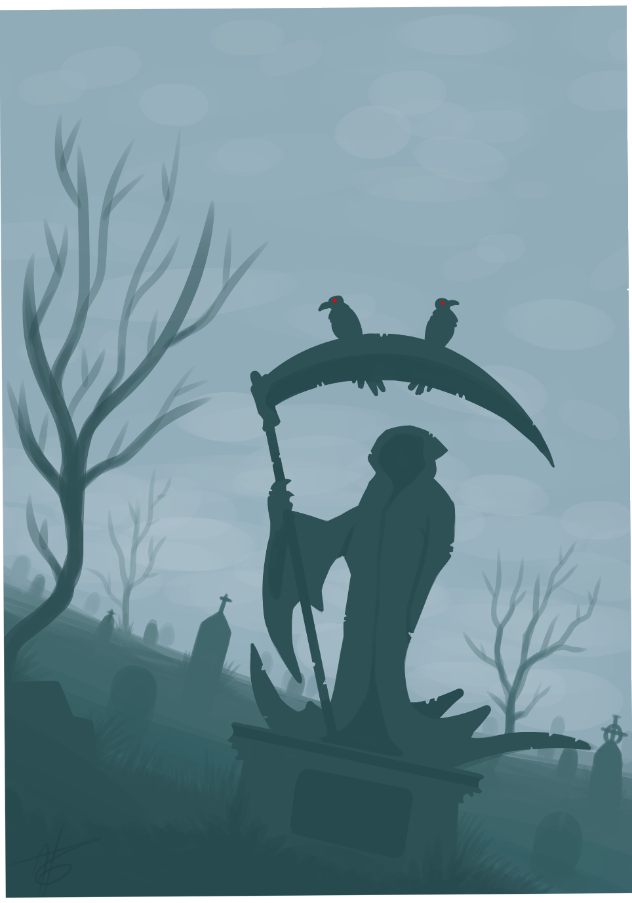
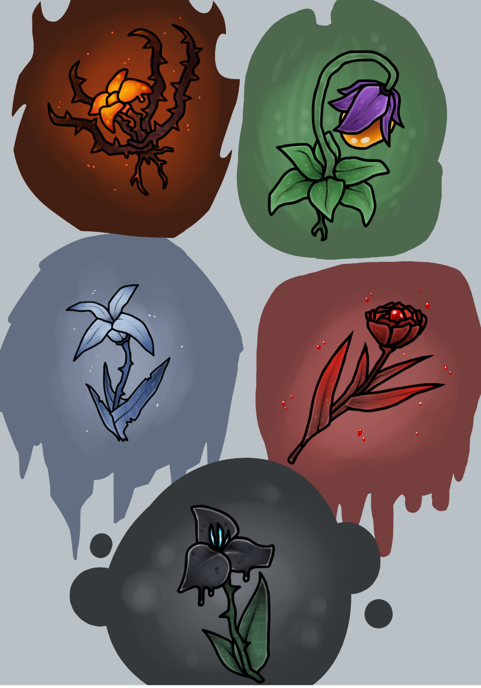

Radovi mrtve prirode
Radovi mrtve prirode, iako ne kreativni, su bitan deo
procesa i vežbe. Različito cveće iz fantazije, kao i pozadine
daju drugašije iskustvo i otkrivaju različite načine digitalnog slikanja.
Groblje
Rad koji je urađen sa više nijansi jedne boje, hladne, mračne
boje su bile motiv i cilj rada je bio da se predstavi mogućnost jedne boje.

Magično cveće
Rad cveća fantastike, magije. Svaki cvet je inspirisan drugačijim motivima,
uključujući palete boja. Cveće je inspirisano elementima prirode i drugim motivima.

Druge strane
Nazad na početak
Radovi kompletnih scena
Radovi karaktera
Kontaktirajte me